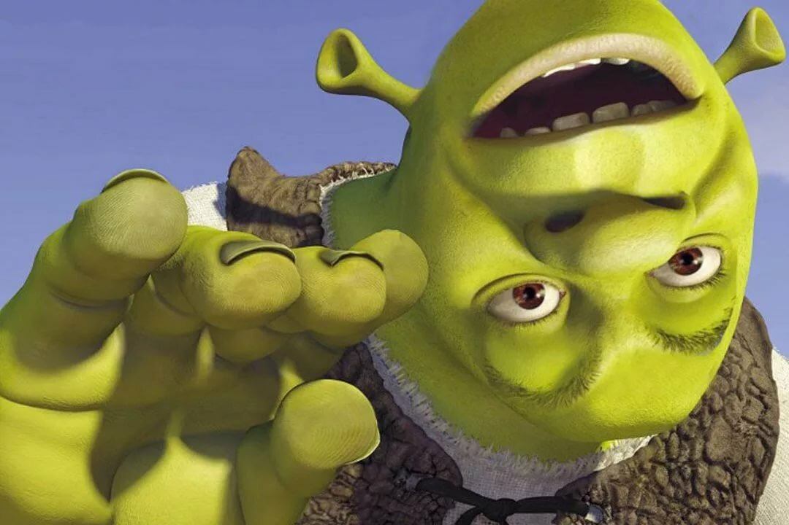

Я ХОЧУ ВИДЕТЬ ДАННЫЙ АБЗАЦ, НЕСМОТРЯ НА ЕГО БЕССМЫСЛЕННОСТЬ, ВЕДЬ Я НАСТОЯЩИЙ ФАНАТ ШРЕКа
КЛИКНИ НА ЭТОТ ТЕКСТ, ЧТОБЫ УВИДЕТЬ ЕГО ИМЯ ЕЩЕ РАЗ
Шрек (англ. Shrek) — вымышленный огр, персонаж детской книги Уильяма Стейга «Шрек!», а также снятой по её мотивам популярной серии анимационных фильмов, сопутствующих фильмам компьютерных игр, комиксов, наборов стикеров и т. д.20 мая 2010 года Шрек получил звезду на Голливудской «Аллее славы» в Лос-Анджелесе. В том же году американский журнал Entertainment Weekly назвал его одним из 100 величайших персонажей за последние 20 лет.
О детстве и молодости Шрека нам мало известно. Зато мы знаем, что его отец постоянно хотел его съесть (один из таких случаев Шрек упомянул в третьем мультфильме). В «Шрек: Мюзикл» нам известно, что он покинул дом в 7 лет, переселившись в новый дом на болоте. В мультфильме «Шрек навсегда» сценаристы хотели показать его в подростковом возрасте.В первом мультфильме («Шрек», 2001) Шрек живёт в одиноком домике на болоте, ведёт размеренную жизнь одиночки, чем, вроде бы, весьма доволен. Он ценит уют и спокойствие, хотя некоторые элементы его жилища уютными может назвать только огр (свечи из ушной серы или коктейли с глазами).Существо добродушное по природе, он, чтобы его не беспокоили местные, расставляет перед жилищем устрашающие таблички, но иногда ему всё же приходится отбивать атаки селян, которые относятся к нему как к обычному великану-людоеду.Однажды в лесу Шрэк сталкивается с Ослом, которого преследуют рыцари Лорда Фаркуада, и спасает его. Но Осёл оказывается чрезвычайно болтлив, что сильно раздражает Шрэка. Впрочем, это только начало его бед: высланные из города Дюлок сказочные персонажи селятся на его болоте. Разгневанный Шрэк отправляется к Фаркуаду, чтобы потребовать вернуть себе болото; в попутчики ему навязывается Осёл.После победы Шрэка и Осла в рыцарском турнире Фаркуад предлагает огру договор: в обмен на возвращение болота Шрэк должен доставить ему прекрасную принцессу Фиону. Огр вынужден согласиться. С помощью Осла он спасает Фиону и конвоирует её в Дюлок, но по пути Шрэк и принцесса влюбляются друг в друга.Решив признаться Фионе в своих чувствах, Шрэк случайно слышит её разговор с Ослом о том, можно ли полюбить столь ужасного монстра. Он приходит к выводу, что речь как раз о нём, и решает забыть принцессу. Однако во время очередной ссоры Осёл проговаривается, что Шрэк на самом деле нравится Фионе. Верхом на Драконихе они мчатся спасать её и срывают свадьбу. В этот момент обнаруживается, что на Фиону наложено проклятье, и по ночам она превращается в огра. Фаркуад решает заточить Фиону в башню и убить Шрэка, но Дракониха проглатывает злодея. Огр и принцесса признаются друг другу в любви и женятся.
